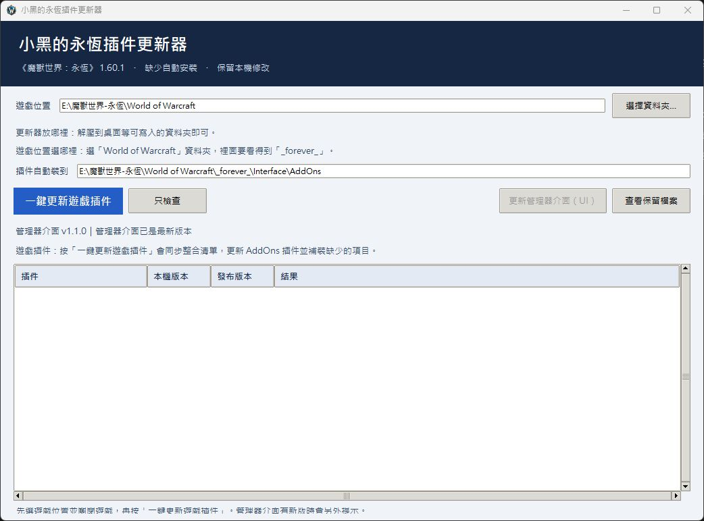
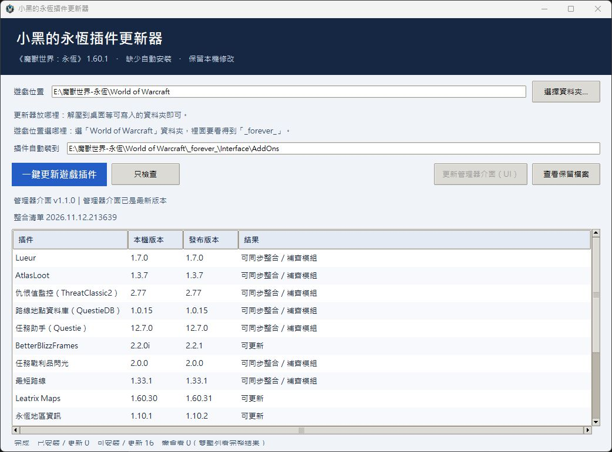

小黑的永恆插件管理器
平常和朋友玩《魔獸世界：永恆》時做的 Windows 小工具。從選擇遊戲位置、安裝任務與副本插件，到之後的版本更新和繁中整理，放在同一個視窗裡處理。
下載 Windows 版 ↓最新版本 · ZIP · 不需另外安裝 Python 或 Git
若未直接開始下載，會開啟 GitHub 發行頁。

v1.1.1：讓朋友更新更順利
這次修正管理器更新後的自動重開，以及繁中和作者新版相鄰修改被誤判為衝突的情況；整合資料的發布也會清掉已取消的舊翻譯，並核對管理器實際版號。
如果你目前用 v1.1.0，第一次按「更新管理器介面（UI）」後沒有自動開啟，請手動再開一次原本的 exe。也可從本頁下載新版 ZIP，只替換 exe 並保留原本的設定、基準和 online 資料夾。v1.1.1 修正後續更新的自動重開。
驗證包含打包版的新增插件、作者升版、繁中同步與衝突保留，以及作者正式下載來源的隔離整套升級（16 項成功、0 錯誤）。尚未在朋友電腦或遊戲內實測。下方實際截圖為 v1.1.0，兩種更新按鈕的用途相同。
把整理插件的時間留給遊戲
原本只是想讓自己和朋友少花一點時間找插件、核對版本和整理中文，所以做了這個休閒專案。沒有裝過插件的電腦，可以從整合清單開始安裝；已經有插件的電腦，也能檢查版本並保留可合併的本機修改。
自己選遊戲位置
不用跟小黑放在同一個磁碟。選擇自己的《永恆》遊戲資料夾，管理器會記住位置，並顯示插件將安裝到哪裡。
缺少的安裝，已有的更新
從插件作者的正式發布來源取得適用版本，檢查 ZIP、版本與必要依賴。清單內缺少的插件或模組會補裝，已有的則檢查更新。
繁中與遊戲內總入口
整理既有繁中修改，包括 AtlasLoot 的永恆地城、團隊和首領名稱。另附小黑插件總入口，方便在遊戲裡開啟已安裝插件的設定；資料庫類插件會註明沒有獨立設定視窗。
整合內容可以線上同步
小黑將新增的整合插件、翻譯或總入口調整發布到 GitHub 後，朋友再按「一鍵更新遊戲插件」就能取得新清單並補裝缺少項目，不用每次重新傳一整包。
保留能合併的個人修改
以原版、目前檔案和新版內容比對，不直接覆蓋所有本機差異。遇到衝突或驗證失敗會保留現況，並在結果欄顯示原因。
實際操作畫面
主畫面可以直接看到遊戲路徑、插件安裝位置和兩種更新。先按「只檢查」，就能比對本機與發布版本，再決定何時關閉遊戲進行更新。

這幾個按鈕有什麼不同？
| 按鈕 | 用途 |
|---|---|
| 只檢查 | 同步整合清單並查詢版本，列出可安裝、可更新或需要處理的項目。遊戲開著時也能先檢查。 |
| 一鍵更新遊戲插件 | 更新所選《永恆》AddOns 裡的插件，也會補裝整合清單中缺少的項目。執行前必須完全退出遊戲。 |
| 更新管理器介面（UI） | 更新這個 Windows 管理器程式本身，有新版時才會亮起。下載驗證後會更換程式並重新開啟，保留已選的遊戲位置。 |
| 查看保留檔案 | 開啟保留檔案的位置。若舊版無法送到資源回收筒，結果欄會告訴你檔案留在哪裡。 |
整合哪些遊戲插件？
目前的整合清單涵蓋任務、導航、地圖、戰鬥與日常介面。以下是主要用途；實際可安裝的版本會依《永恆》客戶端和作者發布狀態判斷。
| 用途 | 主要插件 |
|---|---|
| 任務與路線 | Questie 任務助手、Shortest Path Forever 最短路線，以及所需的 QuestieDB／ForeverCore。QuestieDB 是地點資料庫，沒有獨立設定視窗。 |
| 副本與戰鬥 | AtlasLoot 副本掉落查詢、ThreatClassic2 仇恨監控，以及 DBM 核心、五人副本、團隊與世界首領模組。 |
| 地圖與區域 | Leatrix Maps 地圖調整、Zone Info Forever 區域資訊。 |
| 互動與拾取 | Lueur 互動物件發光、Forever Loot Sparkles 任務戰利品閃光。 |
| 介面與日常 | BetterBlizzFrames、Minimap Button Drawer 小地圖按鈕收納，以及 WhatsTraining 技能學習清單。 |
一鍵更新處理的是這份整合清單；其他自行安裝、尚未設定可信來源的插件，會列出並略過。
上方插件名稱連結可前往各原始專案。插件的功能、原始程式與相關授權歸各原作者；這個頁面介紹的是整理與更新工具。
第一次使用，照這幾步開始
- 從本頁下載 Windows ZIP，完整解壓縮到桌面等可寫入的位置。更新器本身不用放進遊戲的
AddOns。 - 開啟「永恆插件更新器.exe」，按「選擇資料夾」，選擇裡面有
_forever_的World of Warcraft資料夾。 - 核對「插件自動裝到」的路徑是否屬於你正在玩的那套遊戲。也可選
_forever_、Interface或AddOns，管理器會判斷對應位置。 - 先按「只檢查」查看版本。準備安裝或更新時，完全退出《魔獸世界》，再按「一鍵更新遊戲插件」。
- 等處理完成，查看結果欄與「需查看」數量；如有衝突、下載失敗或缺少依賴，先依顯示的原因處理。
- 重新啟動遊戲載入插件。之後把管理器留在原位置，更新時直接再開啟即可。
插件會自動放到 World of Warcraft\_forever_\Interface\AddOns。更新器會保留原版 ZIP 供下次比對；請保留解壓後的管理器資料夾。
更新時，怎麼保留原本的東西？
- 先核對再安裝：檢查客戶端版本、插件版本、壓縮檔路徑、載入檔和必要依賴，避免把不適用的版本裝進去。
- 有衝突先保留現況：無法合併的本機修改不會硬蓋過去，會留在結果欄讓你查看；這不代表所有改動都能自動合併。
- 成功後整理當次舊檔：新版寫入並驗證後，當次舊插件和舊原版 ZIP 會送到資源回收筒；如果回收失敗，就保留並顯示路徑。
- 保存下次比對的資料：請保留管理器旁的
settings.json、baselines／clients和online資料夾，它們保存選定位置、原版與舊翻譯。
幾個常見問題
朋友完全沒有裝過插件，也可以用嗎？
可以。選好自己的《永恆》遊戲資料夾後，一鍵更新會安裝整合清單中缺少的插件，並處理清單內的必要模組；不用先複製小黑整個遊戲資料夾。
本機和發布版本相同，為什麼還有「可同步整合／補齊模組」？
這個狀態不只比較插件版號，也可能代表整合翻譯、總入口、必要模組或更新基準需要同步。它和作者發布新插件版本的「可更新」是不同情況。
更新管理器，要重新選遊戲位置嗎？
正常的內建介面更新會保留原位置和設定。若是從更早、沒有線上更新的離線版開始，需手動換成本版一次，之後才能使用內建介面更新。
小黑裝了新插件，我這邊就會跟著收到嗎？
要先由小黑把插件來源、依賴、中文入口和整合資料發布到 GitHub，朋友下次按「一鍵更新遊戲插件」才會同步並安裝。單純在小黑自己的遊戲資料夾放入插件，不會自動公開或傳到朋友電腦。資料格式仍相容時，不需要為了新增清單而更新管理器介面。
v1.1.0 更新後，視窗沒有自動回來怎麼辦？
手動再開一次原本的「永恆插件更新器.exe」即可。第一次升級仍由舊版執行換檔流程；v1.1.1 修正後續更新的自動重開。也可以下載本頁最新版 ZIP，更換 exe，保留 settings.json、baselines／clients 和 online 資料夾。
沒有網路還能用嗎？
GitHub 連不上時，管理器會沿用上次成功下載且驗證通過的整合清單；第一次離線則使用內附清單。不過插件查版和下載仍需網路。
使用前知道的事
| 作業系統 | Windows 10／11，64 位元。 |
|---|---|
| 遊戲 | 《魔獸世界：永恆》，管理器會依本機客戶端判斷適用版本。 |
| 安裝方式 | 完整解壓 ZIP 即可開啟，不需另外安裝 Python 或 Git。 |
| 下載與空間 | 管理器 ZIP 約 14 MB，遊戲插件會另外從作者來源下載；請另留插件、原版 ZIP 和更新暫存所需空間。 |
| 網路與遊戲狀態 | 查版與下載需要網路。遊戲開著時可先檢查，安裝或更新插件前請完全退出遊戲。 |
這是自己和朋友使用的休閒個人專案，並非《魔獸世界》官方工具。遊戲版本和插件作者的更新可能影響相容性，遇到需要處理的項目時，管理器會顯示原因。